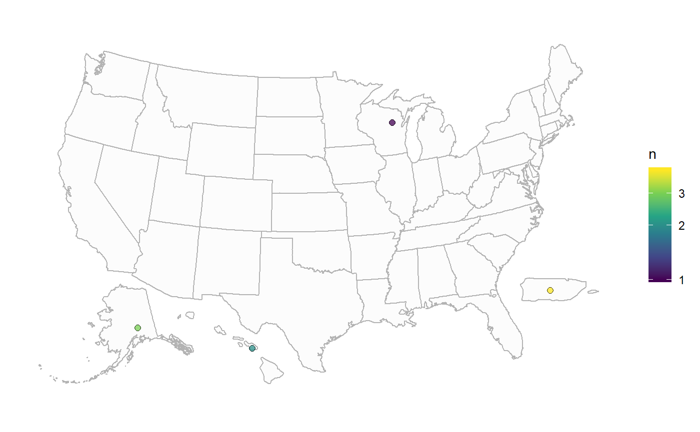
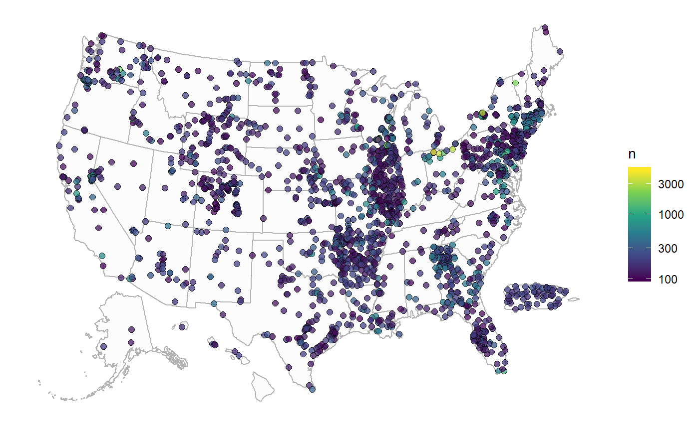

usMaps.RmdWe’re often tasked with plotting sites on a U.S. map that must include AK, HI, and PR. The following example uses the sp,maps, maptools, rgeos, and ggplot2 packages to produce the information to plot points on a map. It was greatly inspired by Bob Rudis’s blog Moving The Earth (well, Alaska & Hawaii) With R.
First we convert the code to some reusable functions:
to_sp <- function(...){
proj.string <- "+proj=laea +lat_0=45 +lon_0=-100 +x_0=0 +y_0=0 +a=6370997 +b=6370997 +units=m +no_defs"
map <- maps::map(..., fill=TRUE, plot = FALSE)
IDs <- sapply(strsplit(map$names, ":"), function(x) x[1])
map.sp <- maptools::map2SpatialPolygons(map,
IDs=IDs,
proj4string=sp::CRS("+proj=longlat +datum=WGS84"))
map.sp.t <- sp::spTransform(map.sp, sp::CRS(proj.string))
return(map.sp.t)
}Next, we have a function that scales, shifts, and rotates the “sp” objects:
shift_sp <- function(sp, scale, shift,
rotate = 0, ref=sp,
proj.string=NULL, row.names=NULL){
orig.cent <- rgeos::gCentroid(ref, byid=TRUE)@coords
scale <- max(apply(sp::bbox(ref), 1, diff)) * scale
obj <- maptools::elide(sp, rotate=rotate,
center=orig.cent, bb = sp::bbox(ref))
ref <- maptools::elide(ref, rotate=rotate,
center=orig.cent, bb = sp::bbox(ref))
obj <- maptools::elide(obj, scale=scale,
center=orig.cent, bb = sp::bbox(ref))
ref <- maptools::elide(ref, scale=scale,
center=orig.cent, bb = sp::bbox(ref))
new.cent <- rgeos::gCentroid(ref, byid=TRUE)@coords
obj <- maptools::elide(obj, shift=shift*10000 + c(orig.cent-new.cent))
if (is.null(proj.string)){
sp::proj4string(obj) <- sp::proj4string(sp)
} else {
sp::proj4string(obj) <- proj.string
}
if (!is.null(row.names)){
row.names(obj) <- row.names
}
return(obj)
}For the United States, this function will get call the shift_sp function on the state/territory boundaries.
reset_states <- function(move_variables, stuff_to_move){
states.out <- to_sp("state")
conus <- states.out
for(i in names(move_variables)){
shifted <- do.call(shift_sp, c(sp = stuff_to_move[[i]],
move_variables[[i]],
proj.string = sp::proj4string(conus),
row.names = i))
states.out <- rbind(shifted, states.out, makeUniqueIDs = TRUE)
}
return(states.out)
}This function will move the points in the states/territories.
reset_points <- function(x, move_variables,stuff_to_move,
scale_by_color = TRUE,
scale_by_size = FALSE){
states.out <- to_sp("state")
conus <- states.out
coords = cbind(x$dec_long_va, x$dec_lat_va)
sites = sp::SpatialPoints(coords,
proj4string = sp::CRS("+init=epsg:4326")) %>%
sp::spTransform(sp::CRS(sp::proj4string(states.out)))
sites.df <- as.data.frame(sites)
for(i in names(move_variables)){
if(any(x$state_abb == i)){
shifted.sites <- do.call(shift_sp, c(sp = sites[x$state_abb == i,],
move_variables[[i]],
proj.string = sp::proj4string(conus),
ref=stuff_to_move[[i]])) %>%
as.data.frame %>%
sp::coordinates()
sites.df[x$state_abb == i, ] <- shifted.sites
}
}
sites.df$n <- x$scale
return(sites.df)
}Then, we create a pretty generic mapping function. This is all ggplot2 code, and might be more appropriate outside of a function for complete customization. In this case, we want the ability to create a “quick-and-dirty” map.
plot_points_on_map <- function(x, move_variables, stuff_to_move,
pt_size = 2,
alpha_set = 0.75,
base_fill = "azure3",
scale_by_color = TRUE,
scale_by_size = FALSE){
if(all(c("coords.x1","coords.x2", "n") %in% names(x))){
sites.df <- x
} else {
sites.df <- reset_points(x, move_variables,stuff_to_move)
}
states.out <- reset_states(move_variables, stuff_to_move)
gsMap <- ggplot() +
geom_polygon(aes(x = long, y = lat, group = group),
data = states.out, fill = "grey90",
alpha = 0.1, color = "grey70") +
theme_minimal() +
theme(panel.grid = element_blank(),
axis.text = element_blank(),
axis.title = element_blank()) +
coord_fixed()
if(scale_by_color & scale_by_size){
gsMap <- gsMap +
geom_point(data = sites.df,
aes(x = coords.x1, y=coords.x2,
fill = n, size = n),
alpha = alpha_set,
color="black",pch=21) +
scale_fill_continuous(type = "viridis", trans = "log10")
} else if (scale_by_color){
gsMap <- gsMap +
geom_point(data = sites.df,
aes(x = coords.x1, y=coords.x2,
fill = n),
alpha = alpha_set,
size = pt_size, color="black",pch=21) +
scale_fill_continuous(type = "viridis", trans = "log10")
} else if (scale_by_size){
gsMap <- gsMap +
geom_point(data = sites.df,
aes(x = coords.x1, y=coords.x2,
size = n), fill=base_fill,
alpha = alpha_set,
color="black",pch=21)
} else {
gsMap <- gsMap +
geom_point(data = sites.df,
aes(x = coords.x1, y=coords.x2),
size = pt_size, color="black",pch=21,
fill=base_fill, alpha = alpha_set)
}
return(gsMap)
}We’ve fiddled with the scaling, shifting, and rotating to:
move_variables <- list(
AK = list(scale=0.47, shift = c(90,-465), rotate=-50),
HI = list(scale=1.5, shift=c(520, -110), rotate=-35),
PR = list(scale=3.5, shift = c(-130, 90), rotate=20)
)
stuff_to_move <- list(
AK = to_sp("world", "USA:alaska"),
HI = to_sp("world", "USA:hawaii"),
PR = to_sp("world", "Puerto Rico")
)Let’s grab some fake data to make sure it works:
library(dplyr)
library(ggplot2)
x <- data.frame(dec_long_va = c(-89,-156.3,-148.6,-66.5),
dec_lat_va = c(45,20.7,62.8,18.2),
state_abb = c("WI","HI","AK","PR"),
scale = 1:4, strings_as_factors = FALSE)
plot_points_on_map(x, move_variables, stuff_to_move)
Now, let’s get some data from dataRetrieval. We’ll call the “site” service using readNWISdata, only pulling stream sites that have measured “Phosphorus, water, unfiltered, milligrams per liter as phosphorus” at least 100 times over at least 10 years:
library(dataRetrieval)
library(dplyr)
all_sites <- data.frame()
failed_sites <- c()
#Running this full code takes about 15 minutes:
# for now, we will not get US territories other than PR:
for(i in stateCd$STUSAB[c(1:51,55)]){
all_sites <- tryCatch({
sites <- readNWISdata(service = "site",
seriesCatalogOutput=TRUE,
siteType="ST",parameterCd="00665",
stateCd = i)
sites_filtered <- sites %>%
filter(data_type_cd == "qw",
count_nu >= 100,
parm_cd == "00665") %>%
select(site_no, station_nm, dec_lat_va, dec_long_va,
begin_date, end_date, count_nu) %>%
distinct() %>%
mutate(begin_date = as.Date(begin_date),
end_date = as.Date(end_date),
years = (end_date - begin_date)/365.25) %>%
filter(years > 10) %>%
mutate(state_abb = i,
scale = count_nu) %>%
group_by(site_no, station_nm,
dec_lat_va, dec_long_va, state_abb) %>%
top_n(1, count_nu) %>%
distinct() %>%
ungroup()
bind_rows(all_sites, sites_filtered)
},
error=function(cond) {
message("***************Errored on",i,"***********\n")
return(all_sites)
})
}